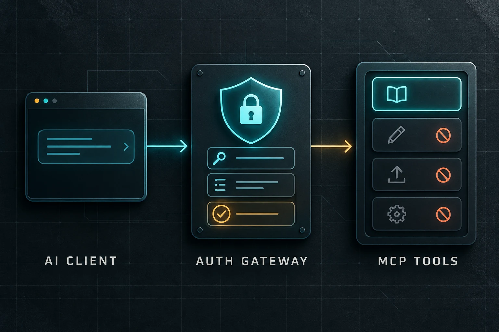

MCP changed in 2026: an authorization checklist for agent connections
Published September 28, 2026 · HomeForge
An MCP connection can work in a demo and still be unsafe in production. The protocol moves tool descriptions and calls between an AI host and a server; it does not replace account authorization, scope design, token validation, or review of consequential actions.
The July 28, 2026 Model Context Protocol specification made the transport more stateless and hardened authorization. Builders upgrading an existing server should check both compatibility and the trust boundary around every tool.

What changed in the 2026-07-28 specification
The protocol removed the old initialize/initialized exchange and the Mcp-Session-Id header. Requests now carry the protocol version, client identity, and capabilities in metadata. A server can expose its capabilities through the optional server/discover method.
Streamable HTTP requests also carry Mcp-Method and Mcp-Name headers. Gateways, rate limiters, and web application firewalls can use those headers to route or meter calls without parsing every JSON body.
For long-running work, Tasks moved out of the experimental core into an extension. Roots, Sampling, Logging, and the legacy HTTP+SSE transport are deprecated with a minimum twelve-month window.
The authorization changes that matter
The release added several OAuth-related protections:
- authorization responses should identify their issuer, and clients must validate it before exchanging a code;
- client credentials are bound to the authorization server that issued them;
- Dynamic Client Registration is deprecated in favor of Client ID Metadata Documents;
- desktop and command-line clients declare their application type for standards-compliant redirect handling.
These details help close protocol-level gaps. They do not answer which tools a person or agent should be allowed to call.
Seven checks before connecting an MCP server
1. Verify the server and deployment model
Know who operates it, where it runs, how it updates, and whether behavior can change without a new local install. Pin and review local code when practical. Treat a remote server as a service that can change after the initial approval.
2. Separate public and protected tools
If some tools need authentication, enforce authorization at the HTTP boundary. Per-tool authorization can keep public discovery available while returning a proper 401 challenge for protected calls. Check authorization again inside sensitive handlers as defense in depth.
3. Validate tokens for this resource
Verify issuer, signature, audience or resource, expiration, and intended scope. Do not accept a token merely because a familiar provider issued it. Bind the resulting identity to the user and tenant data the tool may access.
4. Design narrow scopes around actions
Split read, draft, publish, delete, and administrative capabilities. Avoid one catch-all scope that turns a research connection into write access. A tool name should say what it does, and its parameters should make the destination and affected object explicit.
5. Treat tool results as untrusted content
An authenticated tool can return text from an attacker-controlled document. Keep tool output from directly selecting a sensitive operation. Extract and validate the fields the next step requires.
6. Require approval at the consequential boundary
Authentication answers who may call a tool. Approval answers whether this exact action should run now. Show the user the target, arguments, identity, scope, and expected effect before sending, publishing, deleting, spending, or changing access.
7. Save an external receipt
Record a stable request or attempt identifier, the approved arguments, the server response, and the final evidence from the destination. A successful JSON-RPC response is not always proof that the external system reached the intended state.
A small homelab example
Imagine an MCP server that can inspect and restart services.
service_statuscan be read-only and available to a monitoring agent.restart_serviceshould identify one allowed host and service.- production hosts need a narrower scope than a test machine.
- the restart request should pause for approval when the impact is not already bounded by policy.
- the receipt should include the requested service, exit status, and a health check after restart.
Do not give the same server unrestricted shell access merely because the first use case is simple.
The one-line rule
MCP standardizes the conversation between a host and a tool server. Your application still owns trust, authorization, approval, isolation, and proof.
Sources
- Model Context Protocol: The 2026-07-28 specification, for the stateless core, headers, authorization hardening, Tasks extension, and deprecations.
- MCP Apps: Authorization, for per-server and per-tool authorization,
401challenges, token verification, and defense in depth. - OpenAI API: Safety in building agents, for MCP tool approvals and structured boundaries around untrusted content.
- Anthropic: How we contain Claude across products, for the distinction between auditing a connector and trusting the data it returns.
Get the free Starter Kit →